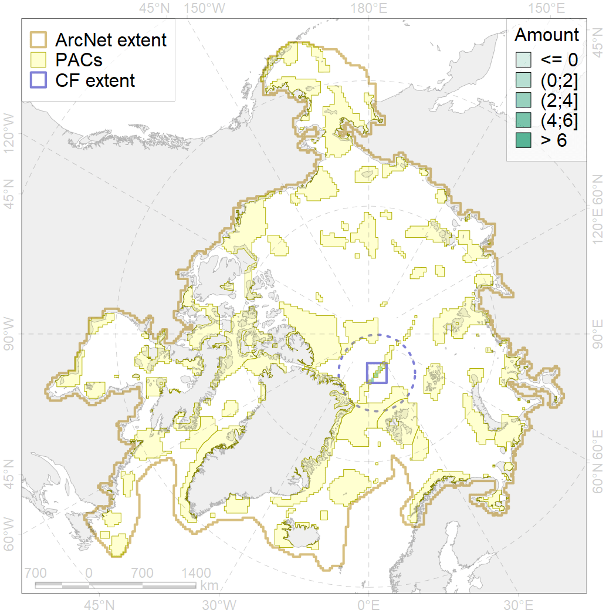
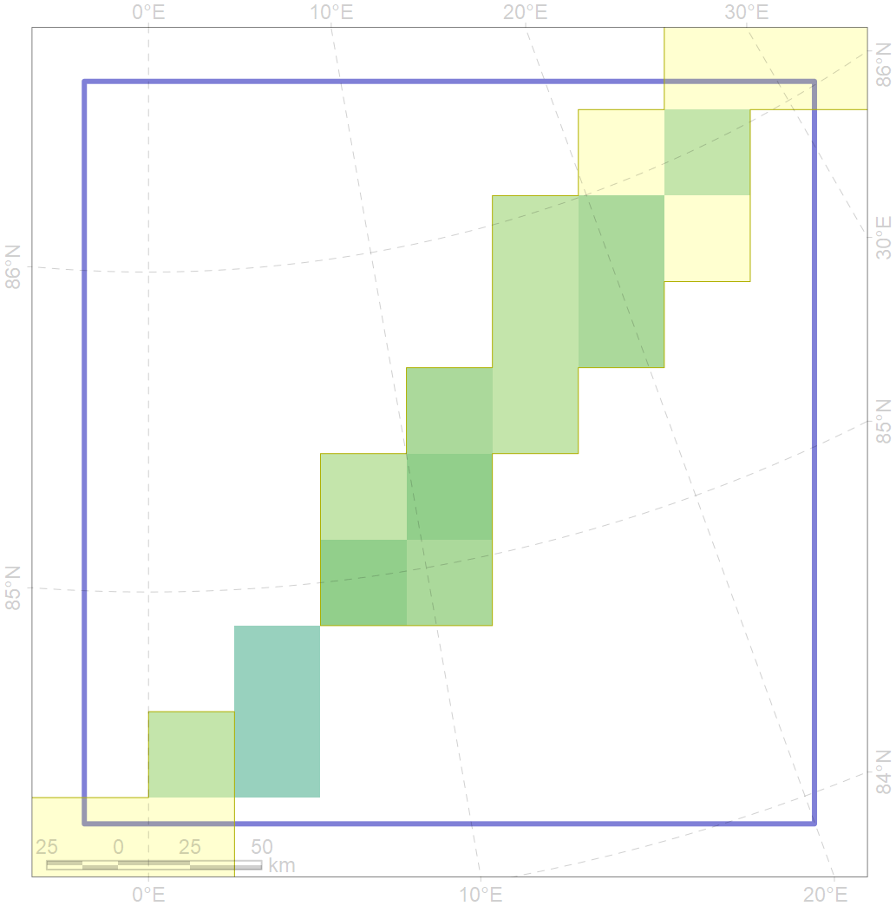

7058

| CF ID | 7058 |
| CF Name | central flank mountains of the Gakkel Ridge |
| Time Period | over last millenia |
| Source(s) | Cohran 2008 |
| Seasonality | January - December |
| Depth Horizon | Sea floor and water column above |
| Methodology | Occurrence was obtained from literature sources |
| Author Name | V. Spiridonov |
| Notes | The layers 7145-7150 contains locations of seamounts in different geographical and structural parts of the Gakkel Ridge. These seamounts show indications of modern volcanism and likely host peculiar benthic communities, partly based on hemosynthetic production; although no actual biological data exist |
| Conservation Target Set in the Scenario | 0.75 |
| Conservation Target Achieved in the Scenario | 0.796 (Scenario: 106.1%) |
| PAC ID | Proportion in the PAC | Contribution to ArcNet Target Achievement | PAC’s Contribution to the Achieved Target |
|---|---|---|---|
| 28 | 82.1% | 102.4% | 96.5% |
| inner | 82.1% | 102.4% | 96.5% |
| outer | 17.9% | 3.7% | 3.5% |